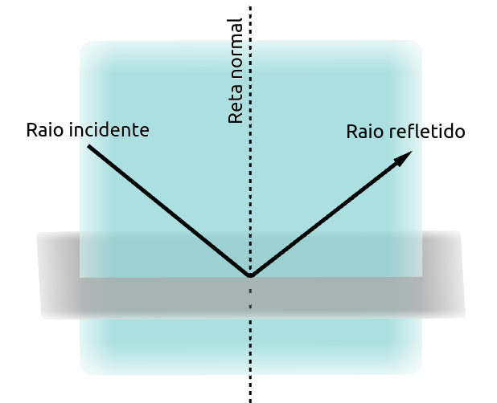
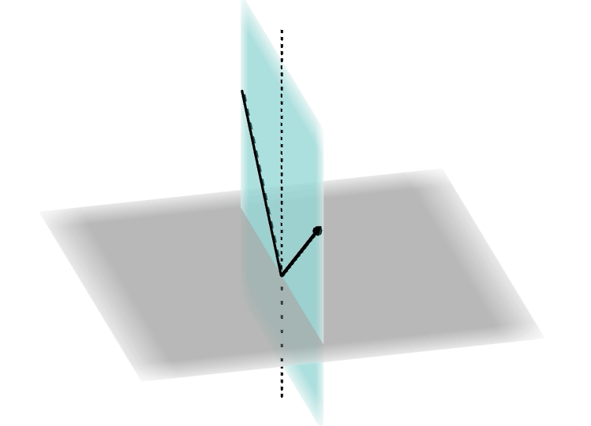
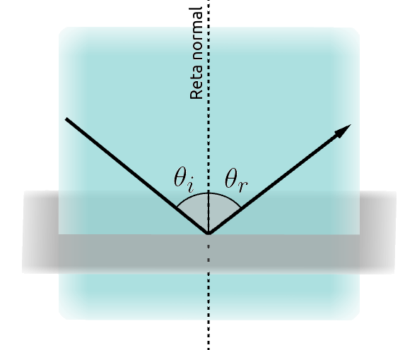
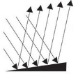
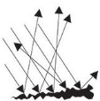
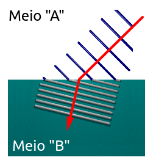
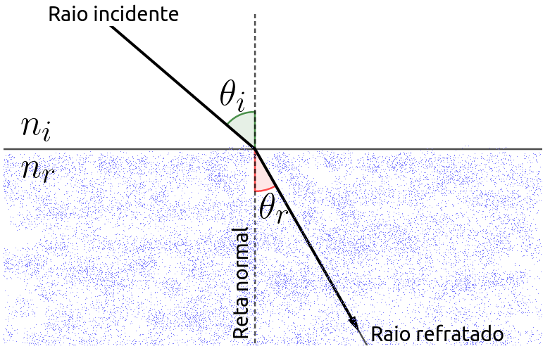
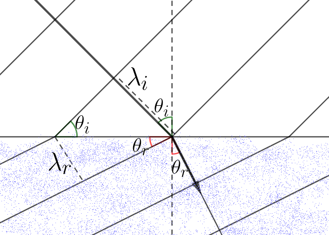
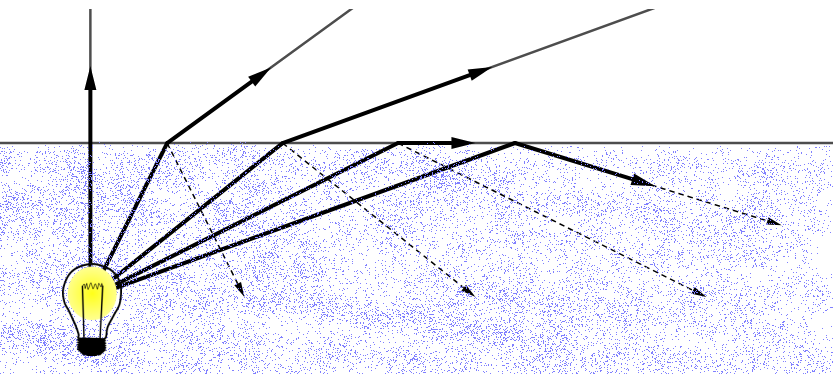
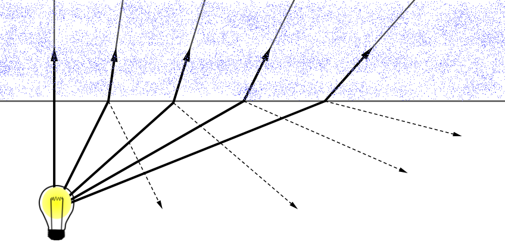

Aula7-55: Reflexão e refração
Reflexão
É o fenômeno físico que faz um feixe de luz (ou qualquer outra onda eletromagnética) alterar sua trajetória ao se defrontar com um obstáculo. Nesse fenômeno, a luz, ao deparar-se com uma barreira, tem a passagem pelo menos parcialmente impedida, o que faz seu sentido de propagação se alterar.
➔ Leis da reflexão: duas leis gerais regem o fenômeno da reflexão:
-
Primeira lei: O raio incidente, o raio refletido e a reta normal são coplanares, isto é, estão em um mesmo plano.


-
Segunda lei: O ângulo formado entre o raio incidente e a reta normal é igual ao ângulo formado entre essa reta e o raio refletido.

➔ Modos de reflexão: um feixe de luz pode ter seus raios luminosos refletidos de dois modos distintos:
|
 |
|
 |
Refração
|
É o fenômeno físico que faz a luz (ou qualquer outra onda eletromagnética) alterar sua velocidade ao passar de um meio a outro. Observe a figura ao lado. Uma onda eletromagnética possui uma “largura”; quando ela penetra outro meio, parte da frente de onda penetra primeiro, enquanto outra parte ainda se mantém no meio de origem. A parte já inserida no novo meio passa a ter a velocidade desse meio e faz, portanto, que a onda desvie sua trajetória, mudando de direção. Note que, para que ocorra esse desvio, é necessário que a onda penetre o novo meio obliquamente (veja a animação abaixo). |
 |
|
◦ Penetração perpendicular |
◦ Penetração oblíqua |
➔ Índice de refração: o índice de refração é uma grandeza física adimensional que caracteriza a velocidade da luz em um determinado meio. Essa grandeza é obtida pela razão entre a velocidade da luz no vácuo (c = 3.108 m/s) e a velocidade da luz no meio analisado.
|
Vácuo |
1,00 |
|
Ar |
≅ 1,00 |
|
Gelo |
1,31 |
|
Água |
1,33 |
|
Vidro |
1,50 |
|
Diamante |
2,42 |
➔ Lei de Snell-Descartes: esta lei nos informa o ângulo de desvio (se houver desvio) que um raio de luz sofre ao passar de um meio a outro.

Se analisarmos com mais atenção a equação acima, perceberemos que, sempre que um raio de luz passa de um meio menos refringente para um meio mais refringente, ele se aproxima da normal; já um raio que vai do meio mais refringente ao menos refringente se afasta da normal. Obs.: se o ângulo entre o raio incidente e a normal for de 0°, embora o raio não mude de trajetória, mudará de velocidade, havendo, então, refração.
Demonstração da lei de Snell-Descartes
|
Perceba que os dois triângulos que fazem divisa, um de ângulo Multiplicando o numerador e o denominador pela velocidade da luz, surgirão os índices de refração: |
 |
➔ REFLEXÃO TOTAL DA LUZ
Conforme enuncia a lei de Snell-Descartes, quando um raio de luz passa de um meio mais refringente para um meio menos refringente, ele sofre uma alteração de trajetória, afastando-se da normal. No entanto, se esse raio incidir sobre a superfície separadora com um ângulo grande o bastante, o afastamento da normal será tal que obrigará o raio de luz a permanecer no meio de origem, provocando a reflexão total da luz.

Obs.: a reflexão total só pode ocorrer quando a luz incide de um meio mais refringente para um meio menos refringente. No caso contrário, a luz sempre refrata; observe a figura abaixo:
